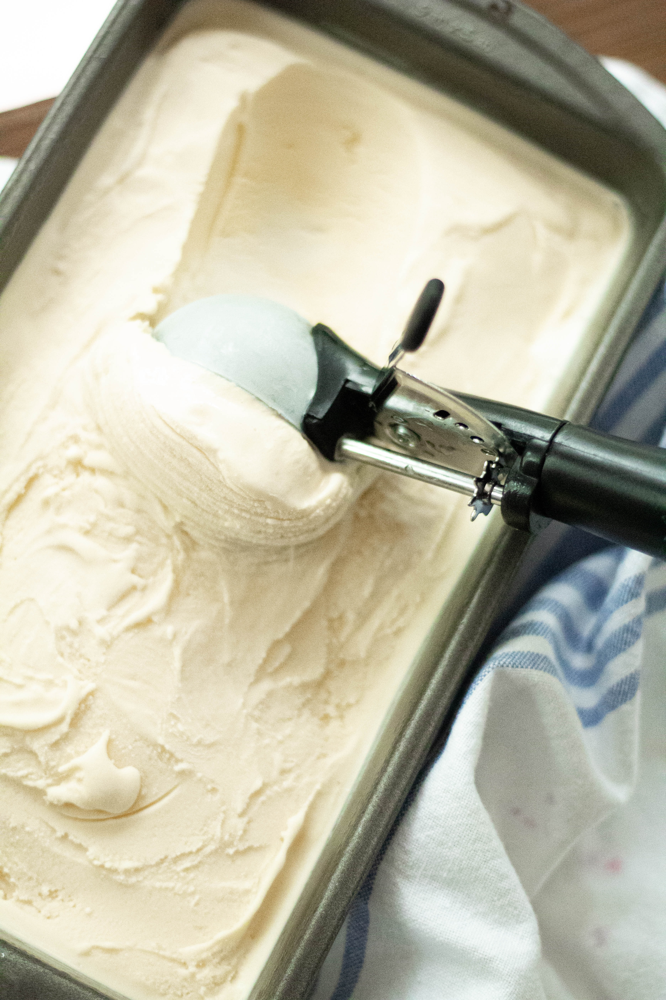
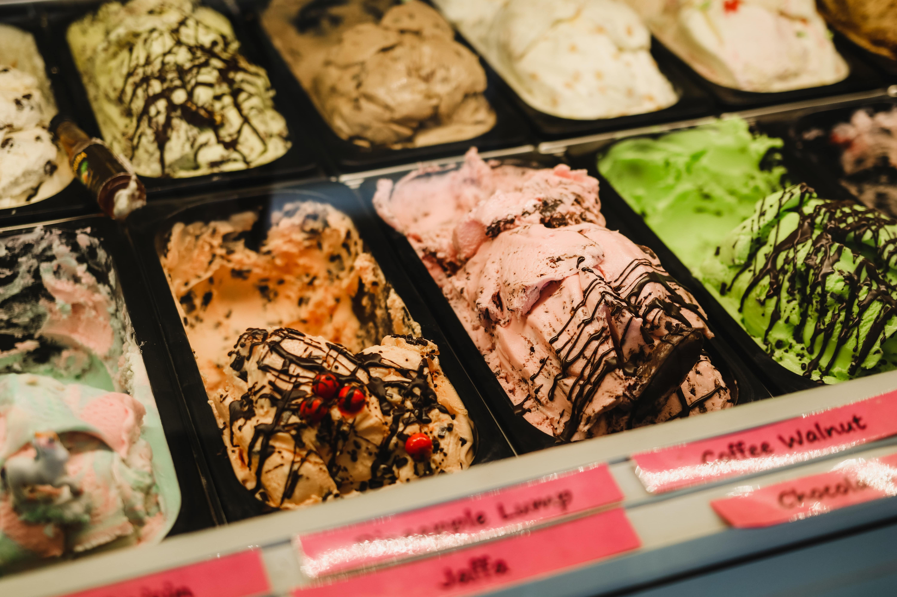
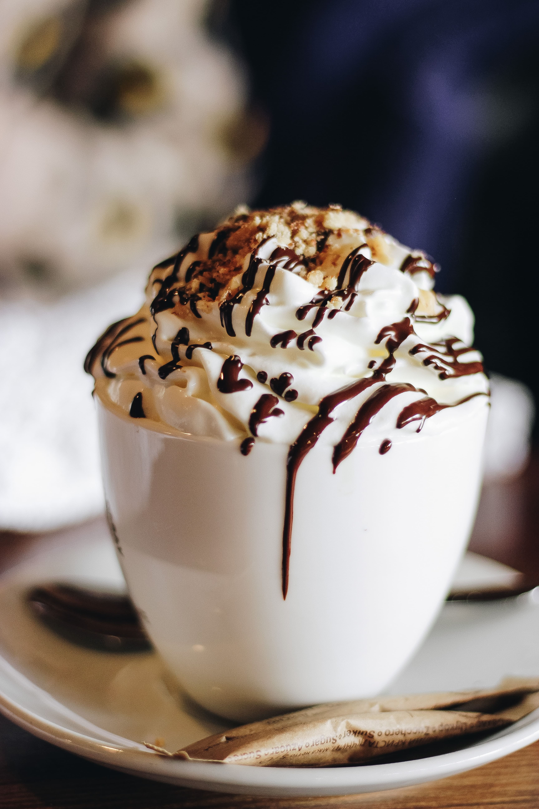
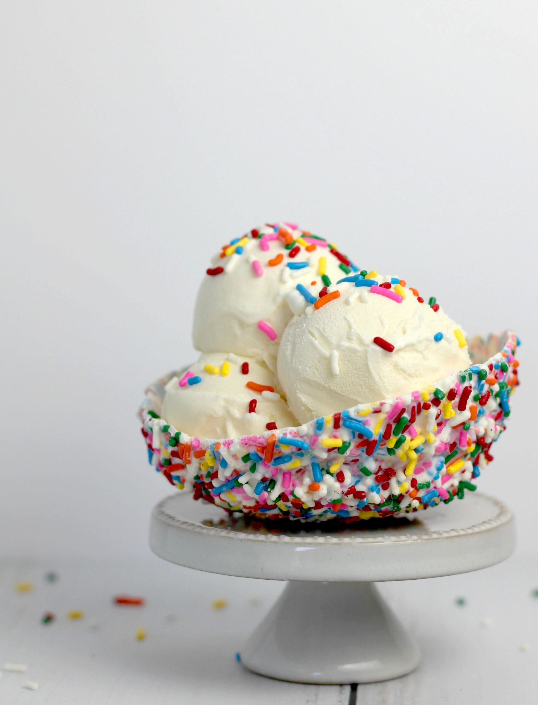
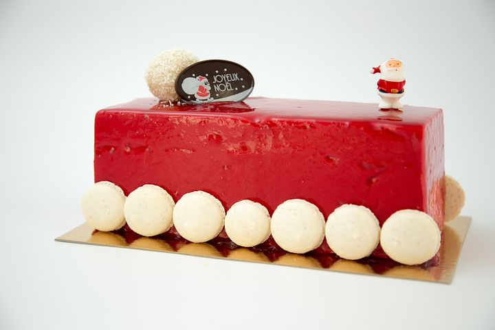
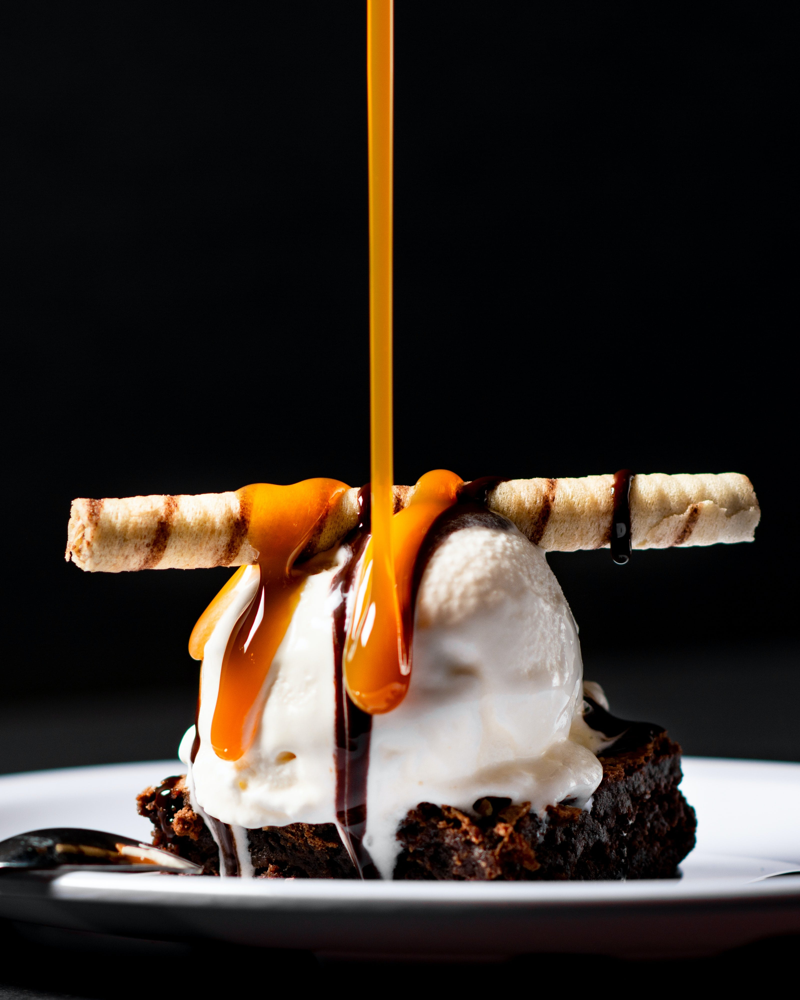
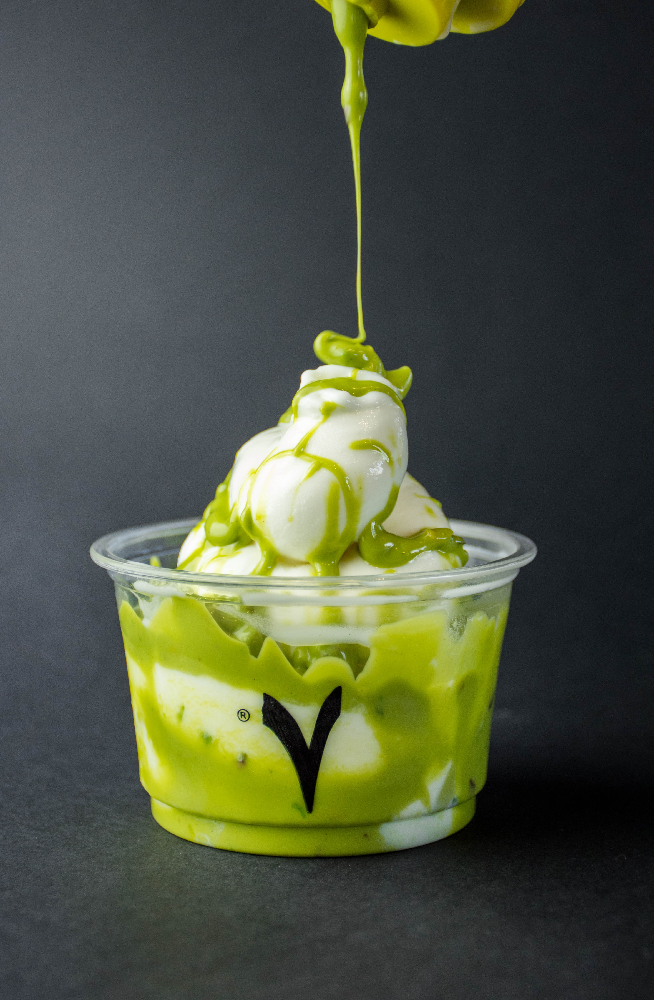

Bac de glace

- LAIT écrémé réhydraté1 (54%)
- CRÈME fraîche1 (20%)
- sirop de glucose
- sucre
- arôme naturel de vanille
Disponible en 2 formats : 500 ml et 1 L
Nos bacs de glace ont une importance capitale pour la conservation de nos produits. En effet, on peut
retrouver nos bacs de glace chez nos particuliers principalement. Leur contenance varie en fonction
de la quantité de glace produite.
Bac de glace

- LAIT écrémé réhydraté1 (54%)
- CRÈME fraîche1 (20%)
- sirop de glucose
- sucre
- arôme naturel de vanille
Disponible en 2 formats : 2L et 5 L
En effet, il existe des bacs de glace bio qui ont évidemment la même fonction que nos bacs de glaces.
Leur particularité fait qu'ils sont bio. On peut retrouver des bacs de glace de 2L et de 5L chez
tous nos professionnels.
Coupe cafée glacée

- LAIT écrémé réhydraté1 (54%)
- CRÈME fraîche1 (20%)
- sirop de glucose
- sucre
- Café
Disponible en 2 formats : 500 ml et 1 L
Une savoureuse crème glacée au goût café. Les plus gourmands apprécieront cette gamme de parfums
riches en crème fraîche d'origine française. Découvrez cette coupe dont vous pouvez la customiser
selon vos goûts.
Coupe Fête

- LAIT écrémé réhydraté1 (54%)
- CRÈME fraîche1 (20%)
- sirop de glucose
- sucre
- arôme naturel de vanille
Disponible en 2 formats : 500 ml et 1 L
C'est en effet l'un de nos incontournable toutes saisons confondues. La Coupe fête est composée d'une
crème glacée gourmande et savoureuse, dont vous pouvez choisir le goût parmi une large liste
diversifiée ou l'on peut retrouver principalement la vanille et le chocolat ou encore au goût fruits
exotiques. Vous pouvez ainsi customiser votre coupe fête en fonction de vos envies.
fruits surgelés
- Framboise
- Mûre
- Fraise
- Cerise
- Myrtille
- Cassis
Disponible en 2 formats : 1 kg et 2 kg
Nous vous proposons effectivement des fruits surgelés au format de sachets de 1 kg et 2 kg. Vous
pouvez donc retrouver des fruits comme la framboise, la myrtille et le cassis.
Glace à l'italienne

- LAIT écrémé réhydraté1 (54%)
- CRÈME fraîche1 (20%)
- sirop de glucose
- sucre
- arôme naturel de vanille
Disponible en format 500 g et 1 kg
Notre délicieux coulis au kiwi ravira vos convives. Notre coulis de kiwi étant d'origine française
est certifiés bio . Vous pouvez retrouver nos coulis chez nos particuliers en proportion de 1L et de
2 L .
Coulis caramel

- Caramel
- Sucre
- Eau
- Arôme naturel
Disponible en 2 formats : 500 ml et 1 L
Notre délicieux coulis au caramel ravira vos convives.
Coulis de Kiwi BIO

Disponible en 2 formats : 500 ml et 1 L
Notre délicieux coulis au kiwi ravira vos convives. Notre coulis de kiwi étant d'origine française
est certifié bio.